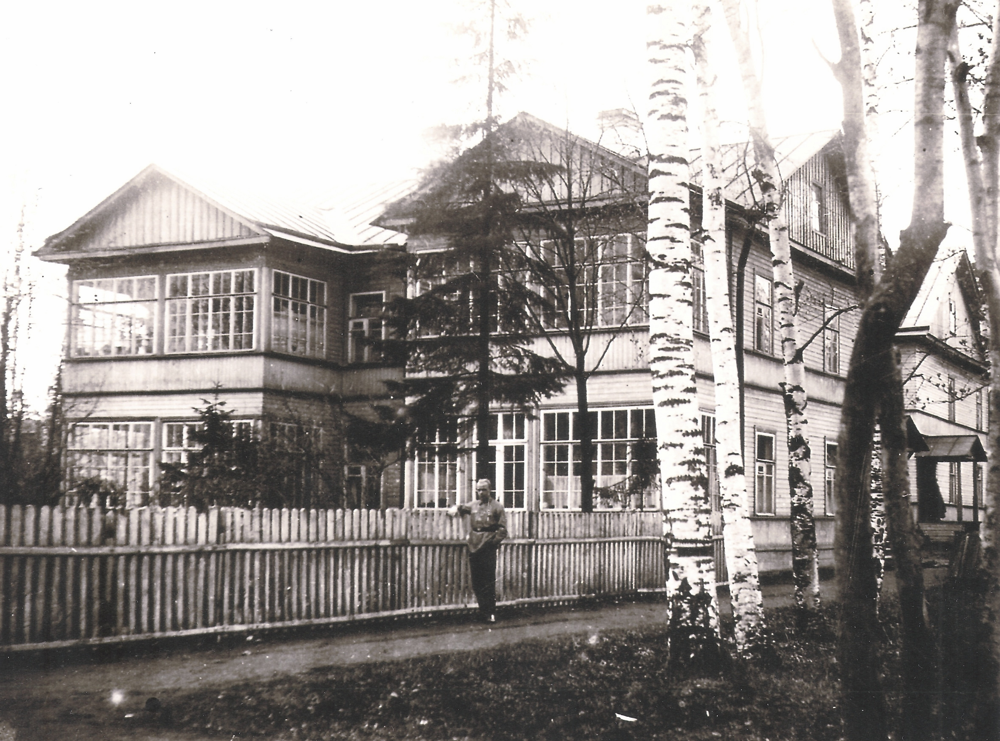
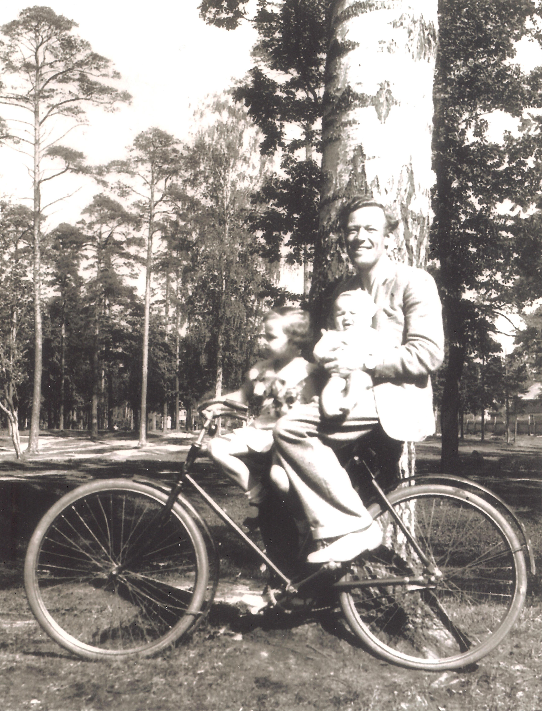
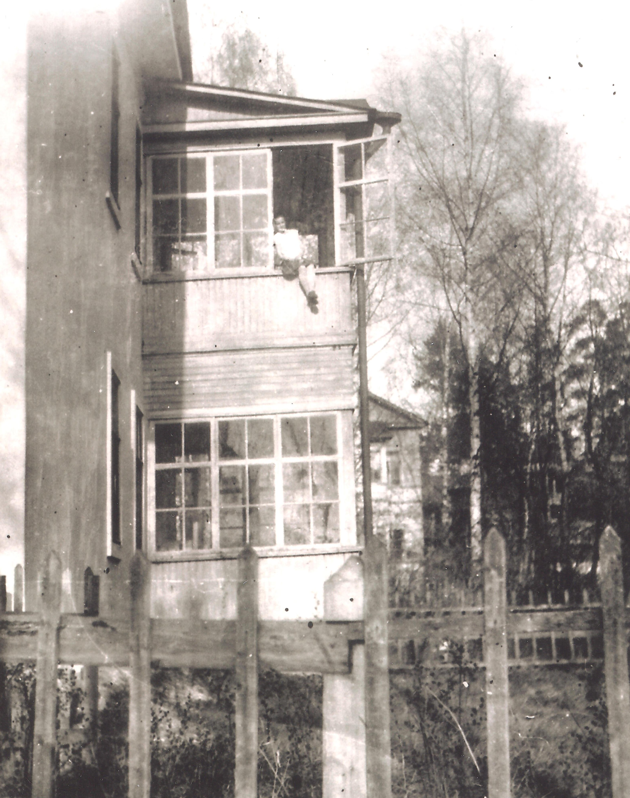

Потому что тогда, когда он еще назывался своим настоящим именем — Старо‑Парголовский, и до того, как всё это случилось, если сойти летом с трамвая на Спасской и выйти к началу проспекта, то за первым особняком в стиле мавританского замка не увидишь ни одного дома, ни одного строения, все они отступили в глубину садов, а справа и слева от пути, насколько хватает глаз, только кроны деревьев, подбитые шпалерой жёлтой акации. Её плети смыкаются с кружевом их ветвей, образуя навесы, своды, аркады и затенённые пешеходные дорожки с обеих сторон скрылись в этих нескончаемых, увитых листвой тоннелях.

Что это — городская магистраль или сказочная лесная дорога?
Могучая булыжная грудь проспекта широка и горделива, ведь пролег он на подъеме и, все набирая высоту, устремился дальше, прямо к Поклонной горе, к финским и шведским пределам. И на всем его пути, как нарастающий лейтмотив, сосны, сосны Лесного: одиночные в ближайших дворах, они стояли отрешенно и строго, словно какие‑то доисторические вехи; дальше, за ними, явились уже сосновые рощи; и, наконец, справа, на высоте, встает настоящий сосновый бор без подлеска. Янтарные колонны под сводами крон, бархат изумрудного мха. Сосновка. А сады и поляны слева, сначала только намеком, а потом все круче и круче начинают уходить под уклон.

Исчезли сады и палисадники, пруды и куртины, клены, ясени, плакучие березы, дубовые рощи, жасмин, сирень, бузина. И еще многое‑многое, что составляло и обрамляло этот былой мир и уклад его жизни. Да нет же, возможно, скажете вы, смотрите, сколько всего еще осталось: есть и березы, и клены, липы и вязы, черемуха, жасмин и сирень… Да и вдоль проспекта, и во всех дворах есть еще и деревья, и даже цветущий кустарник, но все они уже совсем в другом мире, да и сами они уже не те, и заботы у них теперь другие, среди которых две главные: дотянуться до солнца и прикрыть собой безликую наготу стен.
Исчезли улицы: Новая, Лесная, Янковская, Объездная, Раздельная, Яковская, Ананьевская, Васильевская, Михайловская…
Нет больше наших старых дворов, и нигде не осталось тех убитых до тверди прихотливых дорожек, по которым так славно, так вольно было разбежаться или катиться на велосипеде! Дорожки и тропинки эти тоже бежали от двора ко двору, от дома к дому, то напрямик по диагонали, то огибая палисадники, сараи, огороды.

Навсегда исчезли и сами дома: почти сплошь деревянные, исконно бревенчатые или фигурно обшитые рейкой, чаще всего двухэтажные, непременно с верандами, многие с теремками и башенками, а иные еще и в кружеве резьбы или в радуге витражей. У каждого свое лицо. Загородный деревянный модерн.